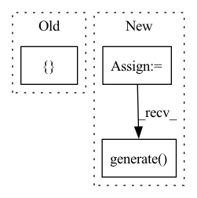

Pattern ID :15256
Before Change
for record in records:
if record["class"] == SignalRecord.__name__:
srconf = {"model": model, "dataset": dataset, "recorder": recorder}
record.setdefault("kwargs", {} )
record["kwargs"].update(srconf)
sr = init_instance_by_config(record)
sr.generate()After Change
rconf = {"model": model, "dataset": dataset, "recorder": recorder}
else:
rconf = {"recorder": recorder}
r = cls(**kwargs, **rconf)
r.generate()
return recorder.info["id"]
In pattern: SUPERPATTERN
Frequency: 3
Non-data size: 3
Instances Fragment ID: 51439936
Project Name: microsoft/qlib
Commit Name: 1dbb56174450ec5cceb443ee41ecbcb4bd60a3af
Time: 2021-04-06
Author: afe.young@gmail.com
File Name: qlib/model/trainer.py
M Class Name: AnonimousClass
N Class Name: AnonimousClass
M Method Name: task_train(2)
N Method Name: task_train(2)
M Parent Class:
N Parent Class:
M File Name: qlib/model/trainer.py
N File Name: qlib/model/trainer.py
M Start Line: 43
M End Line: 56
N Start Line: 43
N End Line: 50
Before Change
pred_score, y_test, __ = drop_nan_by_y_index(pred_score, y_test)
model_pearsonr = pearsonr(np.ravel(pred_score.values), np.ravel(y_test.values))[0]
return pred_score, { "model_pearsonr": model_pearsonr} , rid
def backtest_analysis(pred, rid):After Change
pred_score = sr.load()
// calculate ic and ric
sar = SigAnaRecord(recorder)
sar.generate()
ic = sar.load(sar.get_path("ic.pkl"))
ric = sar.load(sar.get_path("ric.pkl"))
return pred_score, {"ic": ic, "ric": ric}, rid Fragment ID: 51439937
Project Name: microsoft/qlib
Commit Name: 89586562226b1f3aaf4b38ef283af92ffe105e71
Time: 2020-11-21
Author: dw1920@nyu.edu
File Name: tests/test_all_pipeline.py
M Class Name: AnonimousClass
N Class Name: AnonimousClass
M Method Name: train(0)
N Method Name: train(0)
M Parent Class:
N Parent Class:
M File Name: tests/test_all_pipeline.py
N File Name: tests/test_all_pipeline.py
M Start Line: 112
M End Line: 130
N Start Line: 119
N End Line: 131
Before Change
pred_test = model.predict(x_test)
model_pearsonr = pearsonr(np.ravel(pred_test), np.ravel(y_test.values))[0]
return pred_score, { "model_score": model_score, "model_pearsonr": model_pearsonr}
def backtest(pred):
backtestAfter Change
model.fit(dataset)
// prediction
recorder = R.get_recorder()
rid = recorder.id
sr = SignalRecord(model, dataset, recorder)
sr.generate()
pred_score = sr.load()
y_test = dataset.prepare("test", col_set="label")
pred_score, y_test, __ = drop_nan_by_y_index(pred_score, y_test) Fragment ID: 51439938
Project Name: microsoft/qlib
Commit Name: c22bd73f67ec445bc4f542ee9004667663c38f0e
Time: 2020-11-20
Author: dw1920@nyu.edu
File Name: tests/test_all_pipeline.py
M Class Name: AnonimousClass
N Class Name: AnonimousClass
M Method Name: train(0)
N Method Name: train(0)
M Parent Class:
N Parent Class:
M File Name: tests/test_all_pipeline.py
N File Name: tests/test_all_pipeline.py
M Start Line: 82
M End Line: 104
N Start Line: 111
N End Line: 130